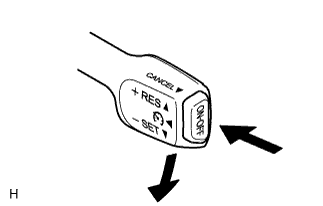
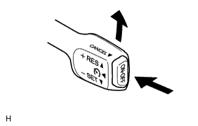
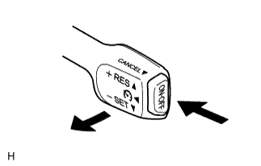

CRUISE CONTROL SYSTEM > ROAD TEST |
| PROBLEM SYMPTOM CONFIRMATION |
 |
Inspect the SET function.
Turn the main switch on.
Drive at the required speed (40 km/h (25 mph) or more).
Push the cruise control main switch to -SET.
After releasing the switch, check that the vehicle cruises at the set speed.
 |
Inspect the + (ACCELERATION) function.
Turn the main switch on.
Drive at the required speed (40 km/h (25 mph) or more).
Push the cruise control main switch to -SET.
Check that the vehicle speed increases while the cruise control main switch is pushed to +RES, and that the vehicle cruises at the newly set speed when the switch is released.
Momentarily push the cruise control main switch to +RES and then immediately release it. Check that the vehicle speed increases by approximately 1.6 km/h (1.0 mph) (tap-up control).
Inspect the - (COAST) function.
Turn the main switch on.
Drive at the required speed (40 km/h (25 mph) or more).
Push the cruise control main switch to -SET.
Check that the vehicle speed decreases while the cruise control main switch is pushed to -SET, and that the vehicle cruises at the newly set speed when the switch is released.
Momentarily push the cruise control main switch to -SET, and then immediately release it. Check that vehicle speed decreases by approximately 1.6 km/h (1.0 mph) (tap-down control).
 |
Inspect the CANCEL function.
Turn the main switch on.
Drive at the required speed (40 km/h (25 mph) or more).
Push the cruise control main switch to -SET.
When performing one of the following, check that the cruise control system is canceled and that the normal driving mode is reset.
Inspect the RES (RESUME) function.
Turn the main switch on.
Drive at the required speed (40 km/h (25 mph) or more).
Push the cruise control main switch to -SET.
Cancel the cruise control system according to any of the above operations (other than turning the main switch off).
After pushing the cruise control main switch to +RES at a driving speed of more than 40 km/h (25 mph), check that the vehicle drives at the set speed.